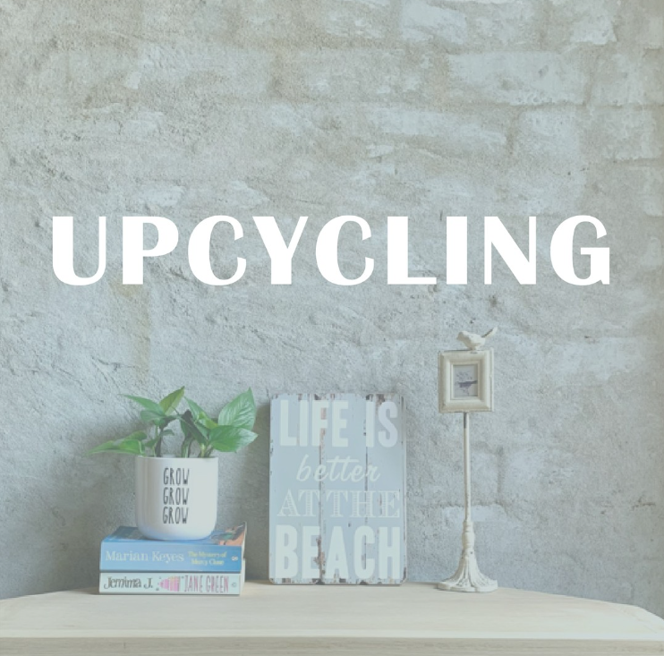

Mi nombre es Agustina. Me dicen Tina. Vivo en Australia hace 6 años. En mis tiempos libres intento dedicarme a mi taller, en donde reciclo muebles!! UPCYCLING es una excelente manera de agregar estilo y, más a menudo, un tema al interior de su hogar o negocio 💫 Cada artículo reciclado es único y tiene una hermosa historia detrás, lo que los hace aún más especiales, ya que siempre es bueno saber que tienes algo que es completamente único 🙌
TE CUENTO UN POCO DE MI
